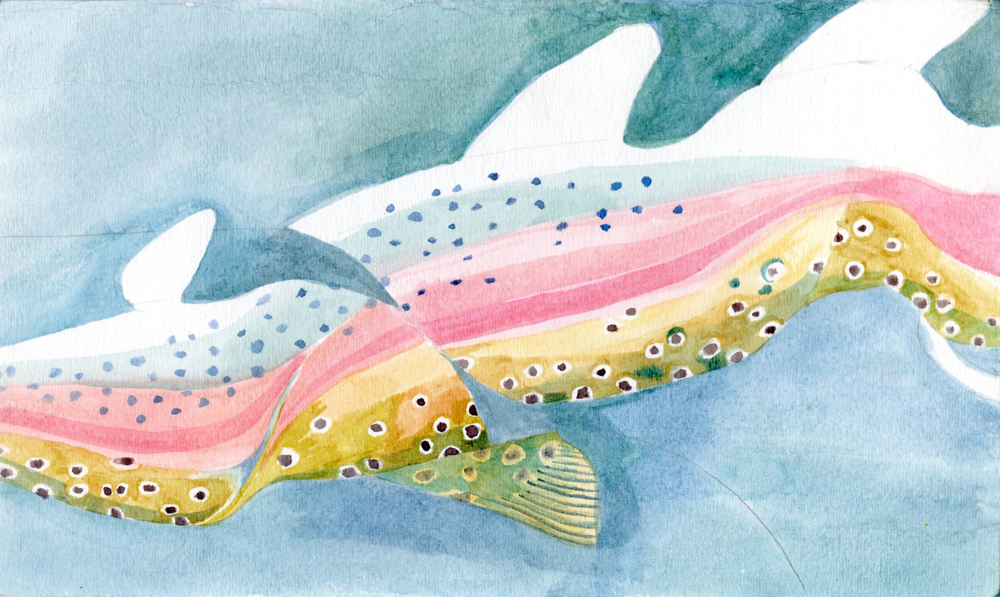

Tucked away in the rolling green hills, there once prospered a medieval town that bustled every day with wagons, filled with all sorts of goods from neighboring lands, passing through the gates, and the commotion of vendors hawking their exotic merchandise. All the way on the outskirts, past the golden wheat fields and verdant cabbage patches lived a huntsman in a humble thatched hut. He was a rather gruff man, with dark, unkempt hair and a bushy beard that always prominently displayed the contents of his last meal. The huntsman lived a modest existence with his wife and two sons, surviving on the game that he hunted from the forest and selling the skins and any extra meat to the town butcher. His sons, the snot-nosed, irreverent brats that they were, always spent their time outside playing with the town ne’er-do-wells instead of learning the trade that he, his father, and fathers as far back as they could recall had done. His wife did little to assuage his anxious state of mind, always nagging him to hone his craft and bring home better game, so she could purchase the newest calico clothes that all the other midwives were chatting about. As such, he always dreamt of easy riches and a more grateful family, and went north of the town to fish at a tranquil pond every week to escape his mundane home circumstance.
It just so happened that the huntsman overheard from a passerby of a mystical lake, and he resolved this weekend to catch himself some fat and tender trout to enjoy for dinner. As he approached the forest, he felt a sense of vague apprehension rise from his stomach. It was certainly an unnerving sight—very little light penetrated the forest, yet the dense undergrowth gave a purple and blue hue to the air so thick it clung onto his skin. The closer he got, the stronger his feeling of being watched and the more shrill the animal screeches seemed. Against his better judgement, the huntsman decided to push deeper into the forest. Ambling through, he discovered that the incredibly vague directions and poorly paved roads made it difficult to discern the trail. After aimlessly wandering for a good half day, he came to the gradual realization that he was completely and utterly lost. The huntsman quickly glanced around and nothing looked familiar—not the trees, the sky, not even the path from whence he had just walked. However, he spotted a flash of mottled brown fur in the undergrowth. Having only packed a chunk of stale rye bread and two cuts of slightly moldy cheese devoured hours ago, the huntsman lunged for the brown patch and grabbed a rabbit by its neck. To his astonishment, the rabbit began to speak. It wept and begged the huntsman not to kill it, and promised to answer one question if the huntsman released it. The huntsman, recovering from his shock, was greatly intrigued and swore on his mother’s grave to release the rabbit. He asked it how to get to the mysterious lake, and although the rabbit confessed that while it did not exactly know, it was on good terms with a magical pheasant that did. After the rabbit gave precise directions to the pheasant’s blackberry bush, the huntsman thanked the rabbit and promptly wrung its neck. He happily hummed to himself while skinning the poor creature, looking forward to the prospect of making a long-delayed hearty rabbit stew and a new pair of fur gloves for the coming winter.
The huntsman followed the rabbit’s directions and before long, spotted a plump, quivering pheasant trying to stay still in the roots of a tall oak tree. Seeing the rabbit hide hanging across the huntsman’s shoulder, the pheasant shuddered to realize the cruel fate that befell his cotton-tailed friend. Desperate to avoid the same demise, the pheasant curled up in his hole but could not escape the sharp, practised eye of the huntsman. He quickly spotted the pheasant, dragged it out from under the roots of the old tree despite its screeching and frantic flapping, and began to question it for the location of the mystery lake. The terrified pheasant, hoping to be spared for telling the truth, reluctantly divulged the information and promptly wriggled out of the huntsman’s grasp, attempting to fly to safety. The huntsman quickly nocked an arrow and pierced the pheasant’s heart with one strike, laughing at its absurd notion of escaping. While skinning the unfortunate pheasant, a particularly colorful tail feather caught his fancy and the huntsman plucked it, tucking it in his cap for decoration.
After a few more grueling hours of travel, the huntsman finally broached a giant body of water that extended as far as the eye could see, almost like a mirror with its silvery sheen, with thatches of reeds on the shore and fireflies dancing above the cool grass that grew in abundance. He realized in walking up to the calm shoreline that this must be the fabled lake and almost collapsed from exhaustion. Despite his fatigue, he eagerly took out his fishing kit and rod and scoured the reed-filled shoreline for a calm, cozy spot to prop up a stool and set up his gear. Having found a large, flat rock under the shade of an ancient elm, he quickly sat down and cast his rod with a mighty swinging motion. Barely a moment passed before he was surprised by a bite. He pulled with all of his strength, but the fish fought so stoutly that it nearly pulled him into the lake. This battle of endurance raged for what seemed an eternity of going back and forth before the huntsman was delighted to pull up a trout of mass greater than his arm span. After unhooking the trout’s mouth, he pulled out his carving knife and prepared to degill the fish when it suddenly spoke. Seeing the pheasant feather and rabbit pelt that the hunter had slung across his shoulder, the trout figured out the fates of his two friends and tearfully resolved to avenge them. The fish commanded the huntsman to stay his blade, for he was renowned as the Great Sage of the Forest. Naturally, the huntsman was skeptical, but also curious. The fish told him that if he would simply follow these three pieces of advice, the huntsman would be able to realize his greatest desire. Still doubtful, the huntsman asked why he should trust the trout. The fish coyly responded that he did not need to, but seeing that the huntsman had neither his wife to pack a hearty meal for the journey nor his sons to accompany him, the fish guessed that the huntsman’s greatest desire was to escape his dreary life of drudgery. Astonished, the huntsman admitted that the fish had hit the mark. He asked what the three pieces of advice were, promising to not kill the fish if it granted his greatest wish. The fish, knowing him to be an oathbreaker, revealed what he had to do. It declared that he was bound by three things keeping him back from achieving his wish: his craft, his kith—those careless children and that unkind wife. The huntsman reddened in recognition of this truth, stowed the fish in a hastily crafted net in the shallows for safe-keeping, and turned homewards to ponder it more.
A few days after he had returned home, the huntsman obsessed over what the trout had told him. To break the chains that the fish had named, the man renounced working as a huntsman, announcing that the town administrator find a replacement. Having been released from his occupational bond, the huntsman decided to celebrate the first step to his liberation by spending an afternoon at one of the town taverns. After sunset, he stumbled through the doorway and figured he ought to scold his children for being good-for-nothings, lecturing them to pursue a trade and stop causing a ruckus every day. The huntsman grabbed them by the scruff and dragged them out of the house, all the while rambling on about how he was going to apprentice them to the town blacksmith. Hearing the commotion that the huntsman was causing, his wife rushed in to stop the huntsman and attempted to smack him with a wooden ladle to make him release their sons. She had only gotten one solid thwack in before she suddenly found the hilt of the huntsman’s carving knife buried in her side. After staring at the huntsman in shock, what happened slowly dawned on her as a dark red blossom bloomed across her dress and she collapsed. The huntsman had finally fulfilled the fish’s last task.
Satisfied that he accomplished all that the fish had instructed, the huntsman dropped his now trembling sons off at the town blacksmith and turned to head back into the forest and retrieve the fish. However, having heard the disturbance that the huntsman had caused, the town’s sheriffs descended upon him like hounds on a helpless doe, and the huntsman was promptly hanged for his crimes. The trout had long nibbled its way out of the crude net, and guessed by the fact that the huntsman never returned that he had gotten what he deserved. Having satisfied the huntsman’s wish and learned a valuable lesson about biting at worms on hooks, the trout lived happily ever after.
Acknowledgements: A thanks to old Italian fairy tales for providing inspiration for many of the themes and motifs scattered throughout my own creation. I’d also like to give my thanks to Professor Ramdass and the editorial board, since without them this story would not have been nearly as complete.
Dark Mode!